Mercedes AURA
The Journey of discovery
Overview
Designing an In-car experience for Mercedes - Benz based on the brief: Journey is the destination
Mercedes AURA is a speculative concept built with Mercedes-Benz during a semester-long studio at MOME University. Working alongside three other designers (two in interaction design, one in automotive design) I helped shape the experience layer of a vehicle built around a simple idea: let children touch, collect, and discover the world outside the window again, instead of disappearing into a screen.
The project spans exterior design language, an in-car interaction system, and a companion digital touchpoint, all tied together by one concept: tactility as the antidote to a screen-locked childhood.
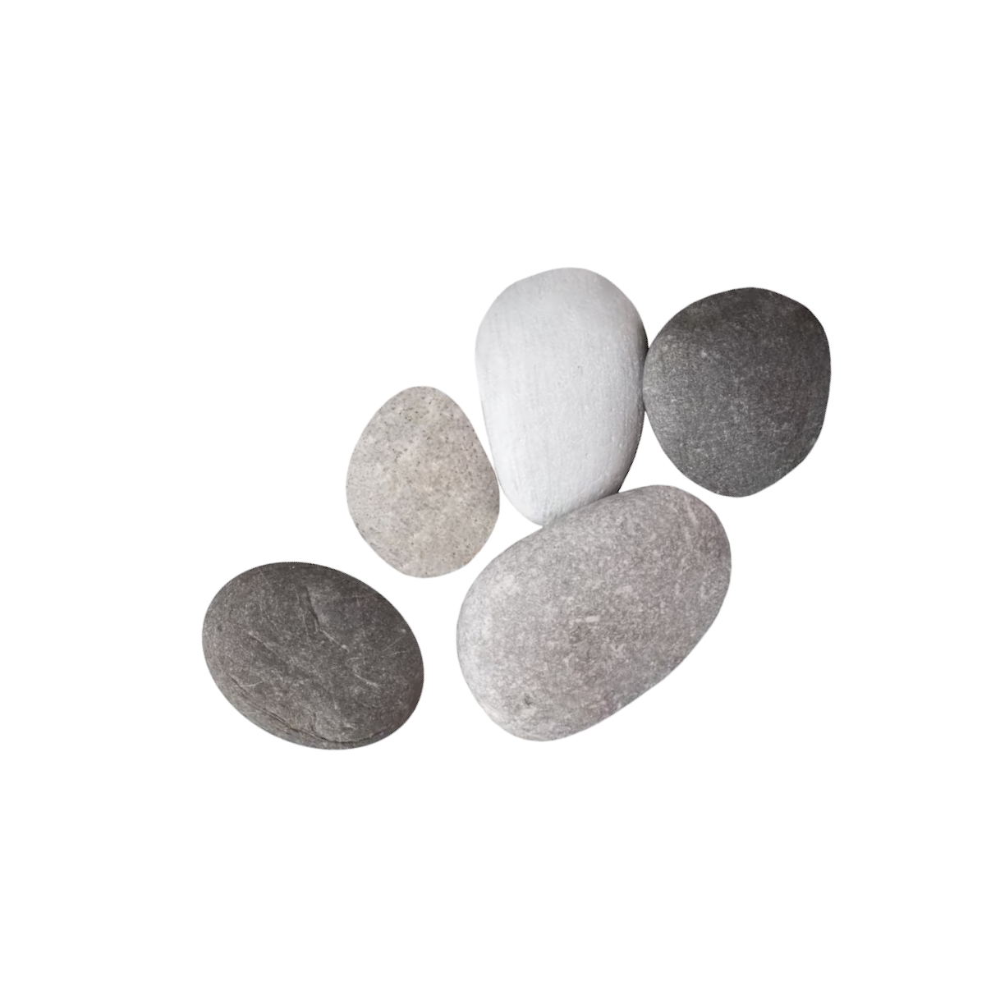
Deliverables
Concept direction, in-car UX system, device design, exterior collaboration, final presentation
Approach
Research-driven, family-centred, multisensory design
The process
From a shared childhood memory to a working prototype: we went wide on the problem, focused on one concept, explored the physical and digital system, and delivered a tested experience.
01 · Discover
- The problem: solo screen time
- Childhood memories
- Desk research on touch
- and child development
02 · Define
- Concept: Tactility adventure
- User journey
03 · Develop
- Centerpiece shape
- Interior layout
- Phigital system
- Exterior collaboration
04 · Deliver
- The form
- Scanning flow
- Digital gallery
- Working prototype
Discover
Why kids stopped looking out of the window
We started from something everyone in the team recognised: children on long car rides disappearing into screens. Before designing anything for the car, we looked at what kids are missing.
The problem
Family road trips have quietly become solo screen time.
Kids are hard to entertain during long car rides. The easiest and most common method is giving them headphones, tablets or phones. This way the landscape outside is reduced to a blur. We wanted to know what a car could do to bring that attention back outward.
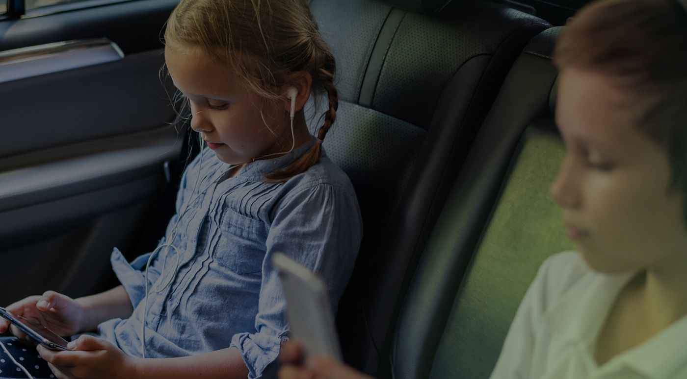
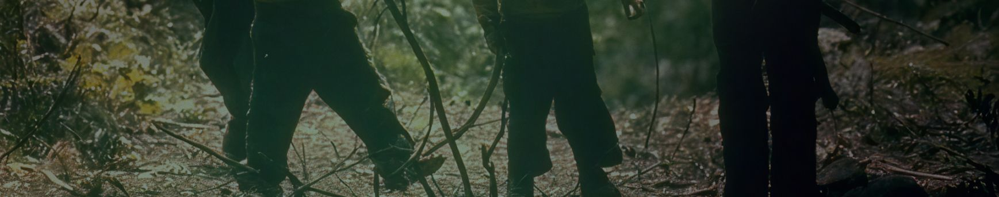
How was it, when we were children?
Insight
We asked ourselves, what was it like when we were children? We recalled a shared, almost lost memory of collecting little trinkets from nature, pinecones and pebbles. We were naturally drawn to these objects.
Based on this memory we started doing desktop research, and found out that exploring, touch and collecting is essential for a child’s healthy neural development.
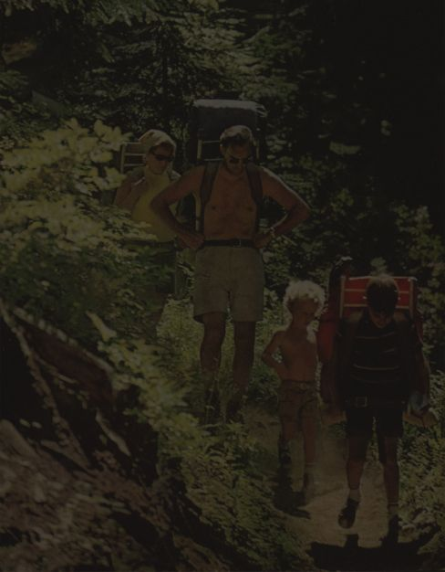
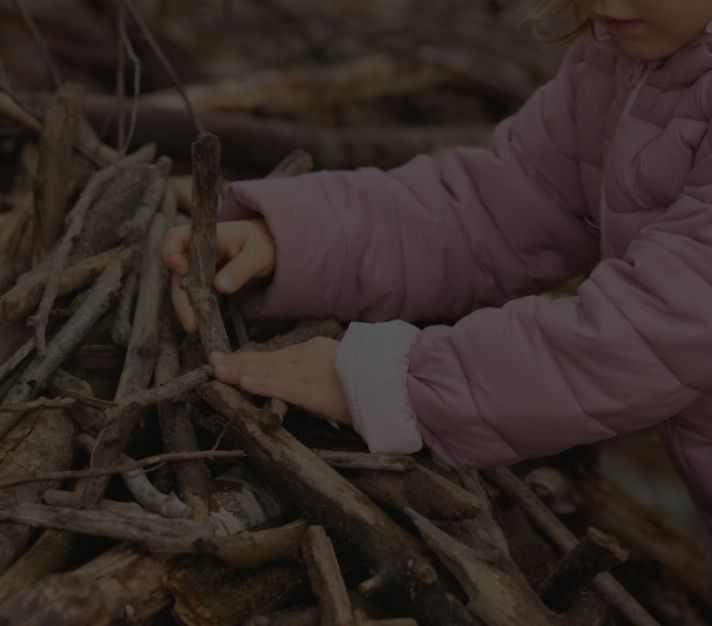
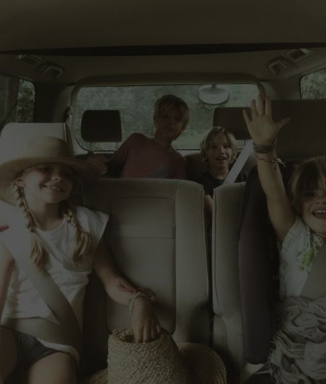
"Every time a child explores a new texture, their brain physically creates the neural pathways used for lifelong problem-solving."
Define
One idea: touch and collect
Research and our own childhood memories pointed in the same direction. We turned them into a concept and a journey for the whole family.
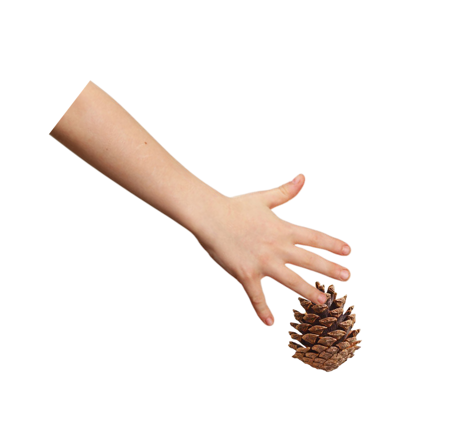
Concept
Tactility adventure
A multisensory experience for the whole family, built around a child's natural instinct to touch and collect. The car becomes a companion to exploration on the way to a destination.
User journey
Imagine the family venturing into the forest, gathering trinkets and bringing them back to the car. By scanning the object, the interior completely transforms, revealing its natural tactile patterns across the car's panels. The car becomes a magnifying glass, providing the ultimate tools for the expedition.
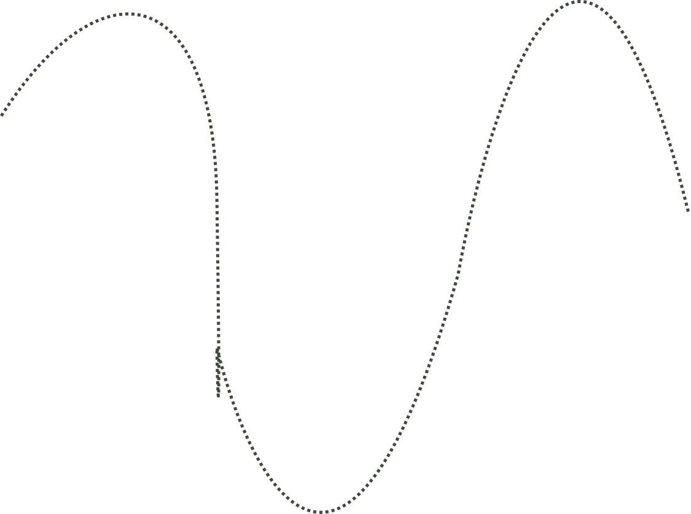
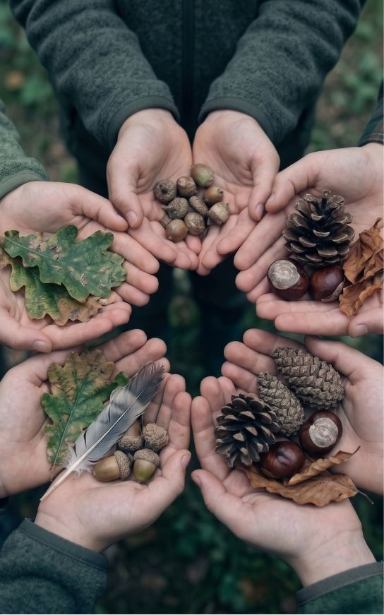
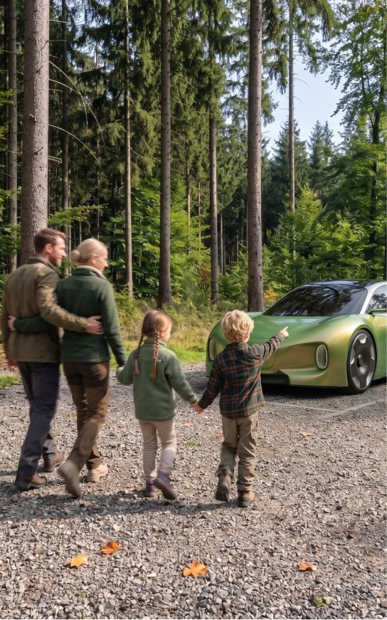
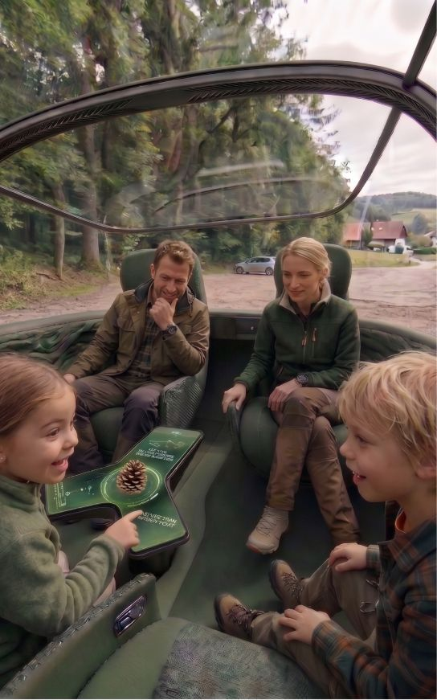
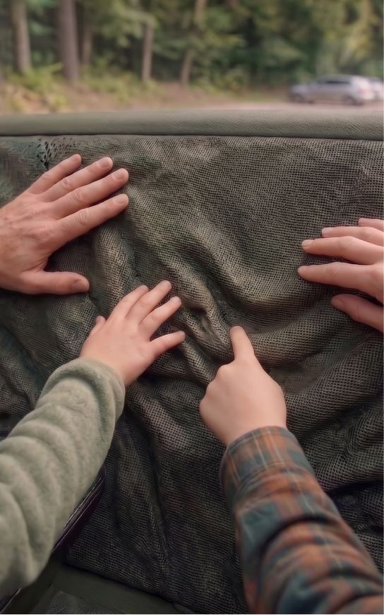
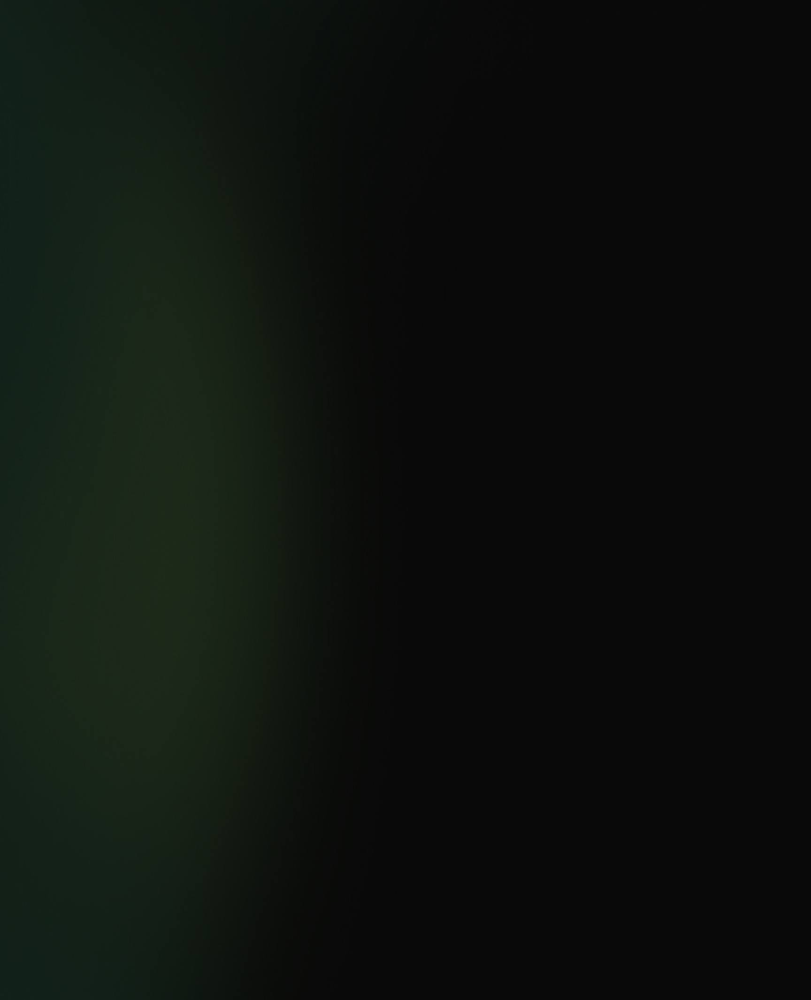
Develop
Designing for the physical and the digital
We designed the centerpiece, the interior layout and the system connecting real objects to digital textures at the same time, together with our automotive designer.
Designing for phigital
We started thinking about the shape of our centerpiece and the car inside layout as well before designing the screens.
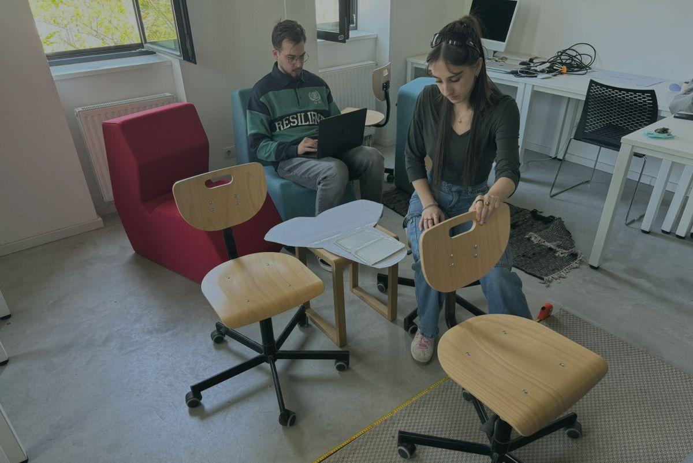
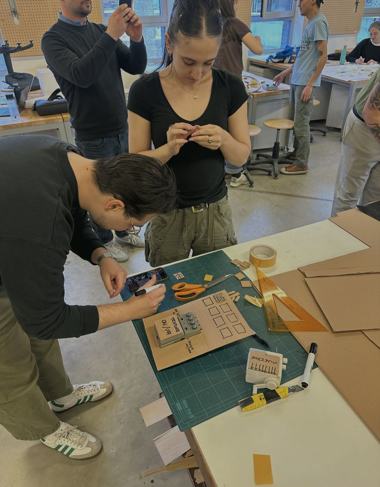
Building the system
For the in car experience, we decided to include:
- a scanner that can read the small objects
- a digital library that can store these scanned items
- texture panels where the family can see and touch how the physical objects convert into digital, and touch it.
- ambient sounds that the car gathers during nature rides and plays back
This way the car can act as a true magnifying glass.
Deliver
The final concept
A three-winged centerpiece, a scanning flow that turns real objects into textures, a digital gallery of memories, and a working prototype we tested live.
The final product
Introducing
Mercedes AURA
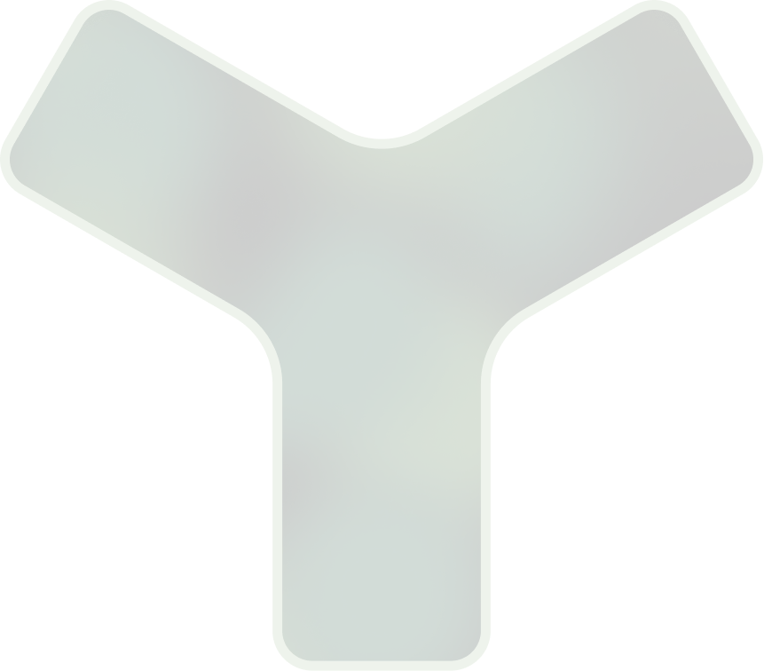
The form
The three winged device inspired from the Mercedes-Benz logo, and one of the main goals we wanted to reach: Bring families together during rides
Scanning a new object
A portal scans in the object and bring it to the “other dimension”, the digital world.
Then users can see the object texture in the scanned form, and then they can apply it to the car surfaces, and interact with it.
Reliving a memory
The scanned memories won’t go to waste, they will live in the digital gallery, where users can revisit them anytime they like.
Prototype
We were able to build a fully working prototype for the new item scanning flow, where the participants could witness in live, how their physical object become digital.
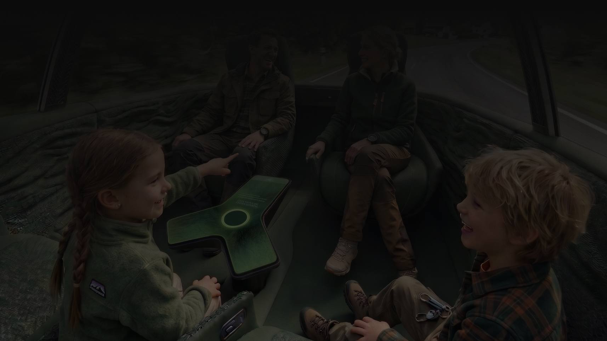
Reflection
Designing for a high-end client can be challenging, especially for the first time, but it is also pushing you to do your best. I feel that I improved a lot during this 6 months. I gained valuable insights about how a big company’s design group like Mercedes-Benz works.
Collaborators
- TAMÁS LAJOS JAKAB
- VLADIMIR BOROVIC
- UROS GAVRILOVIC
- Teacher: Péter Molnár